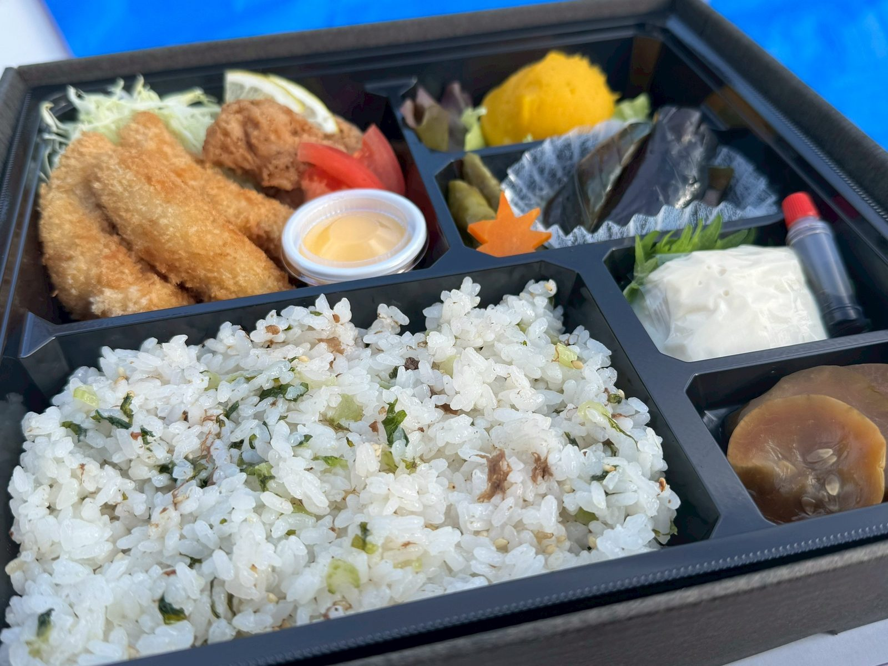
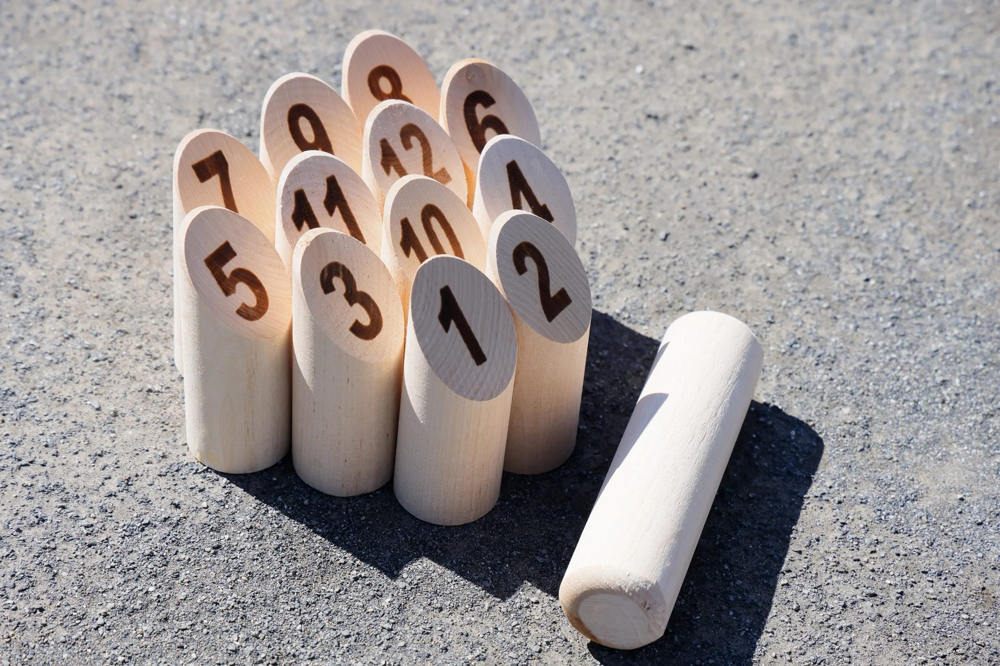

STEP 1／5
モルックってなに？
数字が書かれた木のピン（スキットル）を、木の棒（モルック）で倒して得点を競う、フィンランド生まれのスポーツです。年齢や運動経験を問わず楽しめます。
紅葉を楽しみながらのんびり過ごすもよし、モルックで盛り上がるもよし！みんなで楽しい秋の一日を過ごしましょう🍂
お弁当を受け取ったあとは自由です。14:00のモルックに合わせて、東の広場に集まってください。
ORIBIO特製の紅葉狩り弁当は、日本庭園前ゲートでお渡しします！東の広場に集合する必要はありません。
お弁当を受け取ったあとは自由です。東の広場にB_hoops.の場所取りがあるので、そこで食べてもOK。散策や外遊びで、紅葉をのんびり楽しみましょう。
東の広場で行います。はじめにルール説明があります。参加者は東の広場に集合してください。
12:00〜 お弁当のお渡し

※写真は昨年のお弁当です。今年は内容が変わります。
ORIBIO特製の紅葉狩り弁当を楽しみながら、散策や外遊びなど、自由に過ごしましょう。お弁当は日本庭園前ゲートで受け取れます。東の広場にはB_hoops.の場所取りがあるので、そこで食べたり、荷物を置いてゆっくりしたりもできます。
5,000円お弁当代（1人分）
14:00〜 スタート（会場：東の広場）

年齢を問わず、誰でも気軽に楽しめるスポーツ「モルック」。ルール説明があるので、初めての方も安心してご参加ください。
1,000円参加費（1人）
2〜4人のチームでエントリー。友だち・家族と誘い合わせてご参加ください。
個人参加もOK。主催側でランダムにチームを組みます。
横にスワイプして、5つのステップで確認できます
STEP 1／5
数字が書かれた木のピン（スキットル）を、木の棒（モルック）で倒して得点を競う、フィンランド生まれのスポーツです。年齢や運動経験を問わず楽しめます。
STEP 2／5
チーム対抗のトーナメント戦です。エントリー数によって、2チームまたは3チームで対戦します。はじめにルール説明があります。
STEP 3／5
モルックは下手投げのみです。ピンをねらって、棒を下から投げましょう。
STEP 4／5
倒れたピンが1本なら、そこに書かれた数字が得点です。2本以上倒れたら、倒れた本数が得点になります。
STEP 5／5
先に50点ぴったりになったチームの勝ちです。50点を超えてしまったら、25点に戻ります。
モルック大会は紅葉狩りに参加される方限定です。申込み時にお弁当とあわせてお知らせください。
申込みは公式LINEから受け付けます。
下のボタンから追加してください。
運営からの返信をもって申込み完了です。お振込先も、その際にご案内します。
公式LINEで申込む
LINEで申込む万博記念公園（大阪府吹田市）
12:00〜お渡しします。受け取ったあとは自由です。
万博記念公園の入園料が別にかかります
お弁当代・参加費とは別に、各自でお支払いください。
大人（高校生以上）450円／中学生以下は無料
B_hoops.のバナースタンドを目印にお越しください。お弁当をここで食べるのもOKです。